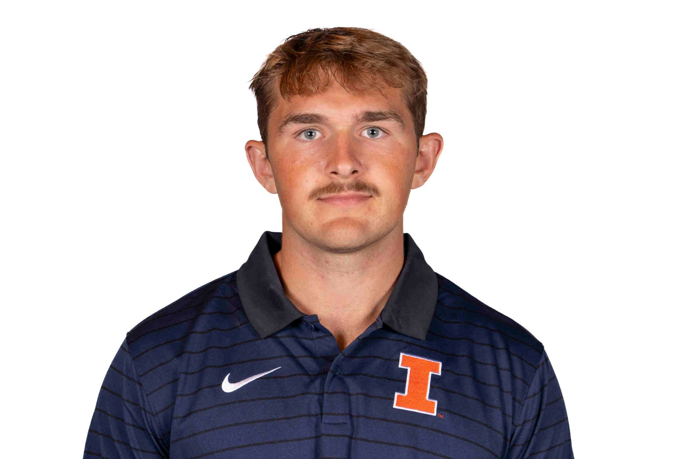

Five seasons, three Power Four programs
I signed with Texas A&M out of Mt. Spokane High School in Spokane, Washington, as a 2022 All-American Bowl selection. I transferred to Illinois in 2024, where my first career field goal attempt set the school record at 59 yards. I spent 2025 as Washington's kickoff specialist (74 kickoffs, 51 touchbacks), then transferred back to Illinois for 2026 as the starting placekicker.
In October 2026 I was named Big Ten Special Teams Player of the Week after going 3-for-3 on field goals and 3-for-3 on extra points in a 38–37 overtime win at Michigan State. Three weeks later I hit the game-winning 26-yard field goal as time expired at Maryland. Entering Week 11, I ranked sixth in the Big Ten in field goals made, with two makes from 50-plus yards, including a conference-leading 54-yarder against Purdue.
- What it takes
- Twenty-plus hours a week of training and competition, in season and out, carried alongside a full course load and a 3.77 GPA across three universities. Three transfers in four years meant learning three systems, three coaching staffs, and three campuses, and competing for the job each time.
- Skills demonstrated
- Performance under pressure; emotional self-control (a kicker cannot react to a miss, only to the next kick); adaptability through repeated major change; and time management at a level most jobs will never demand.
- Pressure performance
- Adaptability
- Time management
- Self-control